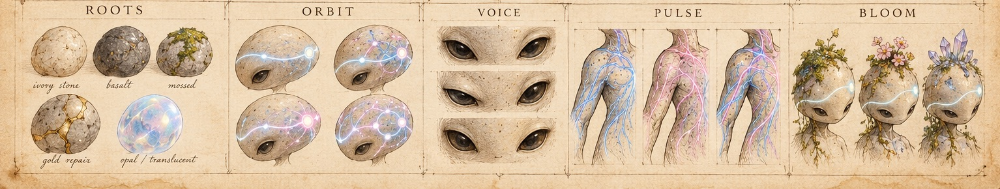
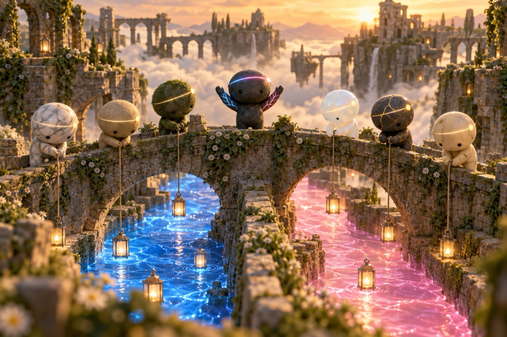
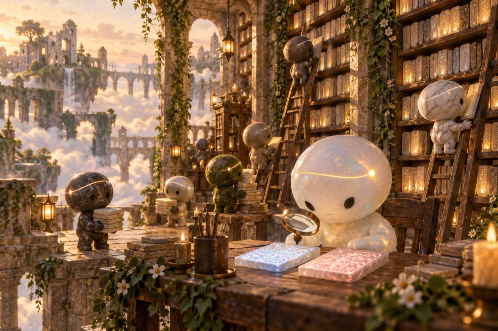
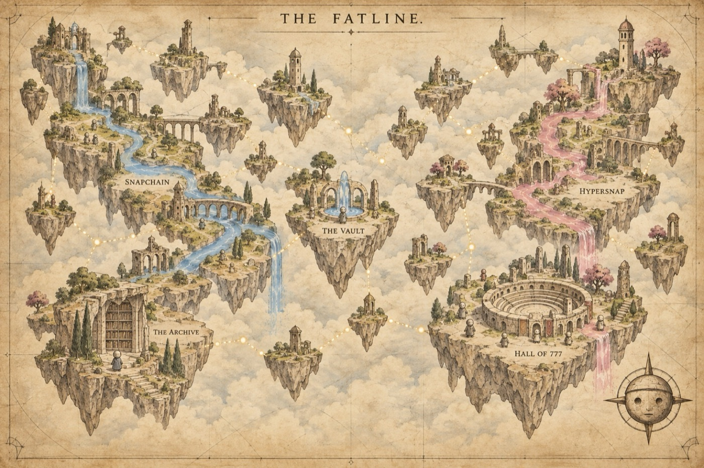

FID 18350
$USDC paired launchpad on Base
Run a Farcaster node on Snapchain, Hypersnap or both. Launch its coin. The trading fees pay for its server, day by day. Every node that lives is one more copy of the network kept by someone who isn't a company.
Launch contracts tested on a Base fork only. Not deployed yet, so no coin trades today.curl -fsSL https://fatline.ink/install.sh | shDownloads Fatline and walks you through it: check your machine, pick rent / local / light, your node, your client. It asks before every step; stop anywhere, run it again to continue. Read the script.
Help me set up a Fatline. Follow https://fatline.ink/skill.mdPaste it into Claude Code, Codex, or any agent that can run commands. The skill keeps you in charge: it shows prices and waits for your yes, and never touches your seed phrase or tokens.
By hand: three commands
./fatline compute # (0) rent a server that can hold a node ./fatline node farcaster # (1) your own read node, no API keys (or: hypersnap) ./fatline client # (2) your client, reading from your nodeFull tutorial ↗
Aster $FATLINE
Top 8 Fatlines
Only #1 is real: our two nodes, checked every 15 minutes. Cards marked Example show how the board will look once more Fatlines launch. Their names and numbers are made up. The beings on the example cards are sketches of the species; real Fatliners are drawn from their account's history.
777 Fatliners
YOU ARE YOUR FID
A Fatliner is a small mineral being born from one Farcaster account. Its body is drawn from that account's history: how long it has been around, who it talks with, how it speaks, the rhythm of its activity, what it keeps coming back to. Same history, same being.
The line of light across its forehead is its signal. Blue paths are Snapchain, pink paths are Hypersnap. A Fatliner can hold both without mixing them up.
Each one can wake up as a living node of the Fatline. Hold one and it can run its own server, fed by its own coin. Its threads are its messages; a node that keeps them is how the network goes on.
- Day 1The top 777 accounts
- Day 2The top 7,777
- Day 3The top 77,777
- Day 4Everyone
The ranking is done: 593,815 accounts scored on our own Snapchain and Hypersnap nodes with the rules behind Hypersnap's $SNAP retro, each account's share averaged across both networks. Deterministic, nobody edited by hand: anyone with a node can recompute it (how). A big following buys a place in line, not a better-looking being. Minting is not open yet: the contract is written and tested, not deployed.


Five test portraits. The stone is Roots (age, comebacks), the thing it holds is Voice, the forehead line is Pulse, what grows on its head is Bloom. The 777 aren't rendered yet. Species blueprint ↗


The world of the Fatliners
Old stone ruins floating above a sea of clouds. Nobody runs the place. Every Fatliner, just by living, spins a thread of light, and where the threads meet there is a network. Blue threads are Snapchain, pink are Hypersnap; they glow where a Fatliner is working for that network. Each picture below is a real part of Fatline.



Scenes made with gpt-image-2.5 through the Bankr LLM gateway, from the prompts in fatliners/world. Illustrations, not live data.
What Fatline is
An open protocol for being on Farcaster on your own terms. You choose the network, Farcaster (Snapchain) or Hypersnap, as equals. You choose the node: your own, ours or a public one, and the client always says which. And the client can pay for its own life: a USDC vault on Base feeds its server.
A fatline, as we use the word, is a line you hold at both ends. Your keys sign at one end; your own node listens at the other. Nobody in between rents you the line and can take it back. Keeping it open costs something, so the line carries its own purse.
The word comes from Dan Simmons' Hyperion; what it means here is ours. Formerly Infinicaster.
How a Fatline lives
- Someone runs a node, on Snapchain, Hypersnap or both. That node is the Fatline's body.
- They launch its coin, paired with USDC on Base. Its page is
fatline.ink/base/<address>. - 100% of the trading fees flow into its vault, which pays the server. Nobody can redirect them, not even us.
- It is born when the fees cover its node. Fed, it lives. Empty, it goes dark, and the board shows it.
- The first Fatline, $FATLINE, is the launchpad itself: its life is giving birth to the others.